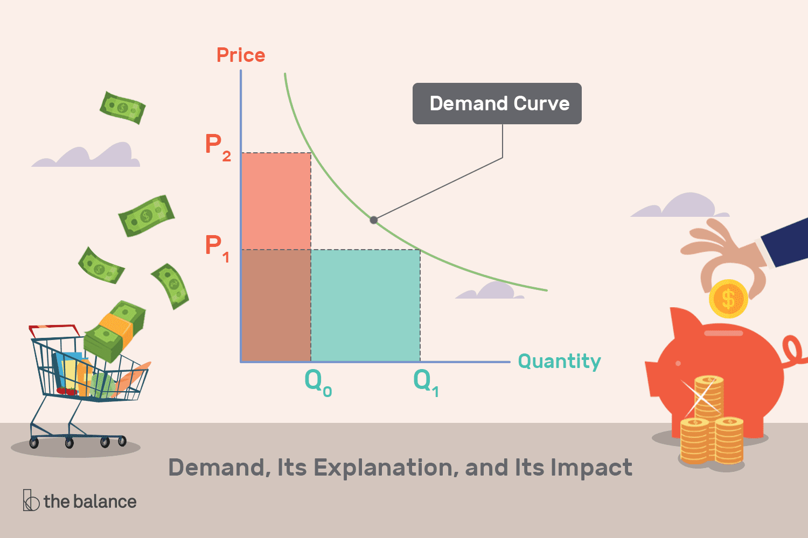

-Tumutukoy sa dami ng produkto o serbisyo na kaya mong/gustong bilhin/bumilhin
Demand=mga mamimili
Presyo=Price
-Ang presyo pinakamahalagang nagtatakda (determinant) sa dami ng demand.
Batas ng Demand - Ceteris Paribus
Demand = pataas
Presyo = pababa
Substitution Effect: Pamalit, Ipinapahayang nito na kapag tumataas ang presyo ng isang produkto, ang mamimili ay makahanap ng masmura.
Normal Goods: Mga bagay na mabibili para sa araw-araw
Income Effect - mas malaki ang halaga ng kinikita kapag mas mababa ang presyo.
Demand Schedule: Table form ng demand, parang chart
Demand Function: Qd=a-bP, ito ay isang mathematikong formula
Demand Curve : Tumutukoy sa grapikong representasyon sa batas ng demand

Mathematikong Formula: Demand = Kagustuhan + Kakayahan
-Populasyon
-Panlasa
-Substitute Products
-Presyo ng hinaharap
-Panahon/klima
*Maaari may shift sa demand graph